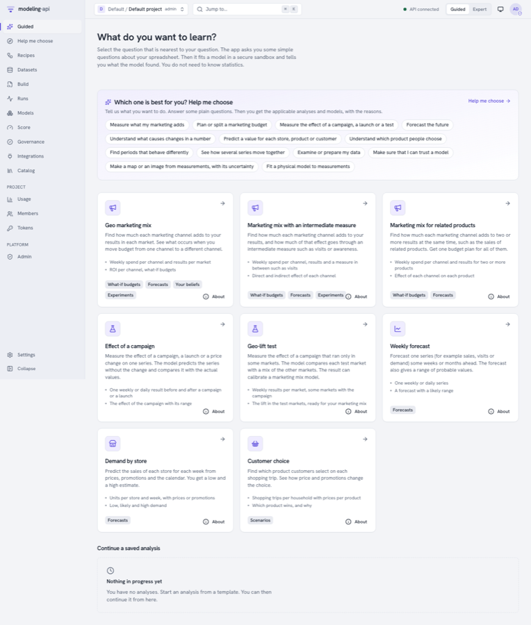
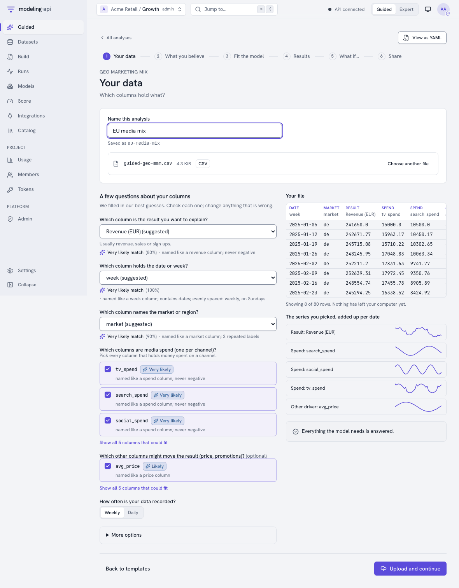
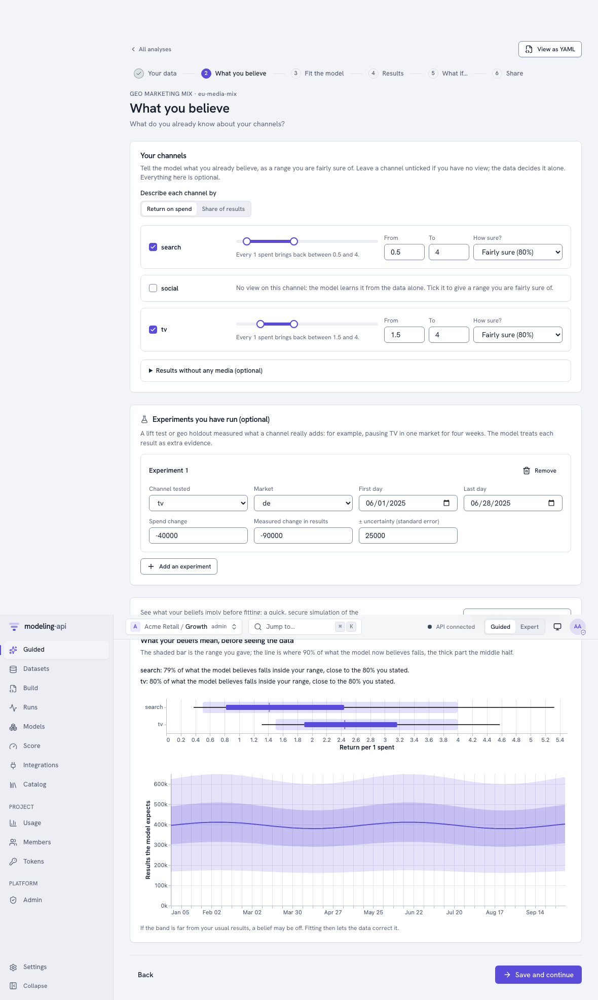
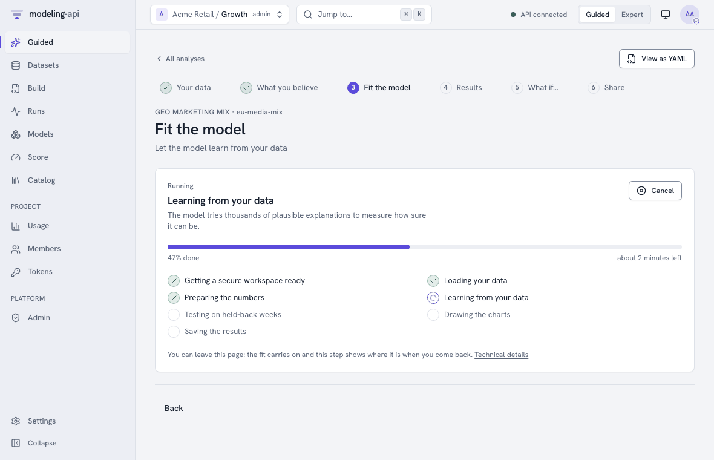
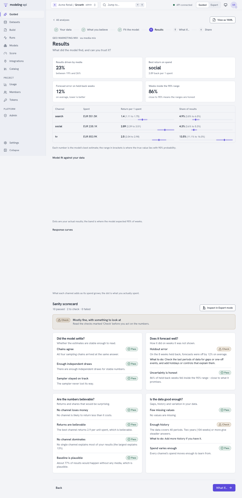
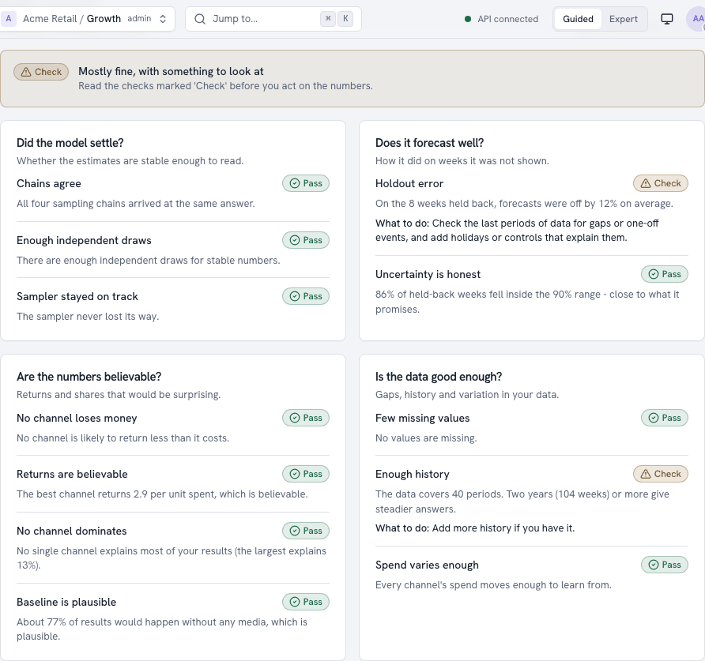
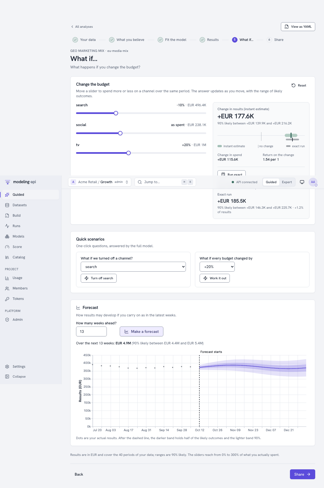
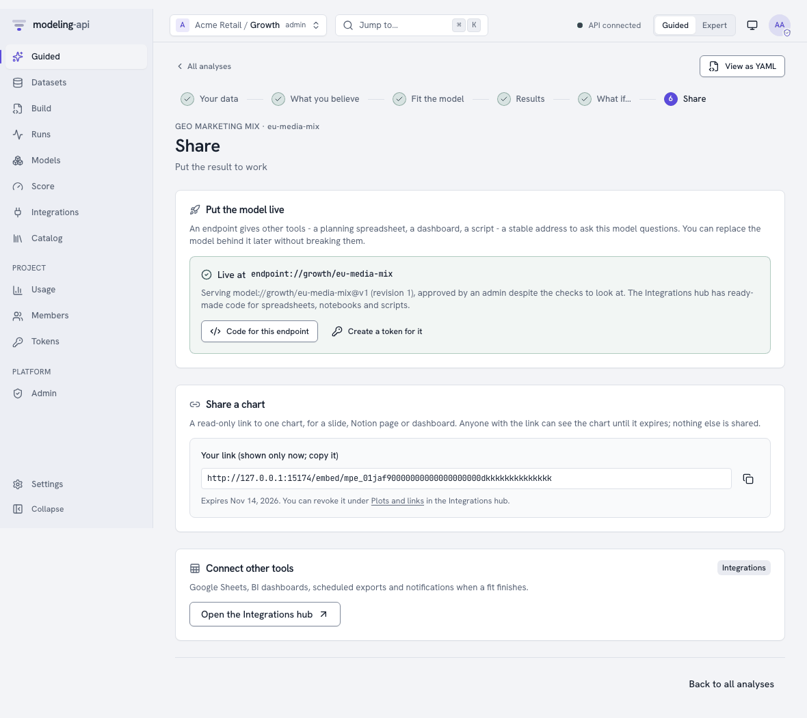
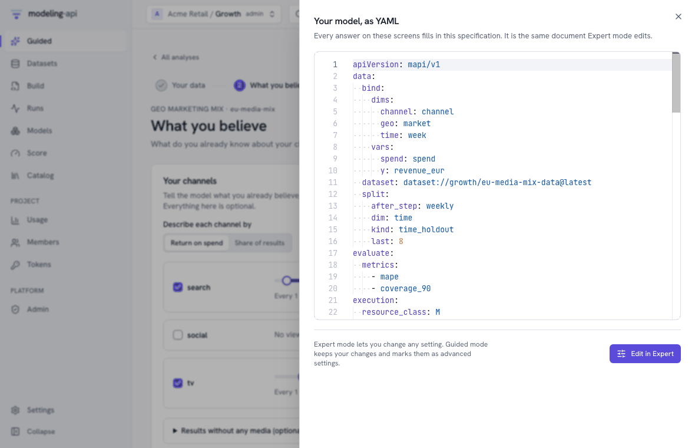
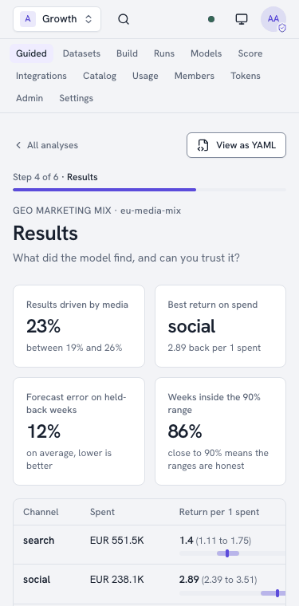

Your first analysis in Guided mode v0.4¶
Guided mode takes you from a spreadsheet to a trustworthy answer. You do not write YAML, and
you do not need to know statistics. You select what you want to learn. You answer some
questions about your columns, and you tell what you already believe. Then the platform fits a
model in a secure sandbox and tells you what it found in plain words. Each screen uses the same
ModelSpec that Expert mode edits. See Guided mode for the
concepts.
This tutorial shows a geo marketing mix: weekly revenue and media spend for each market.
The tutorial takes about ten minutes. If you do not have your own data, use the sample in the
repository, apps/web/e2e/fixtures/guided-geo-mmm.csv. The sample has 40 weeks, two markets,
spend for TV, search and social, and an average price. The screenshots come from the web app
in mock mode (pnpm --filter @mapi/web dev:mock). Thus the numbers are only examples.
Every step has its own address
The app saves an analysis immediately when you upload its data. Each step has its own URL
(/guided/<analysis>/<step>). Thus you can bookmark the step or send it to a colleague. You
can also close the browser during a fit. Later, you can continue from Guided → Continue
where you left off.
1. Choose what you want to learn¶
If you signed up for the workspace, the workspace opens on this page. In other workspaces, use one of these methods:
- Set the header to Guided. The app remembers the choice for your account.
- Open Guided in the sidebar.
- Click Start a guided analysis on Home.
Each card is a template. The card shows the question that the template answers, the data that it needs, and what you can do with the result.

| Template | Use it for |
|---|---|
| Geo marketing mix | What each channel adds to your results for each market, ROI for each channel, what-if budgets |
| Marketing mix with an intermediate measure (v0.12) | What each channel adds to one national result, and how much of the effect goes through a measure such as visits or awareness |
| Marketing mix for related products (v0.12) | What each channel adds to two or more national results at the same time, with one budget plan for all of them |
| Effect of a campaign (v0.13) | The effect of a campaign, a launch or a price change on one series, with a range |
| Geo-lift test (v0.13) | The effect of a campaign that ran only in some markets. The result can calibrate a marketing mix model. |
| Weekly forecast | One weekly or daily series, forecast with a probable range |
| Demand by store | Units for each store and week from prices and promotions, with low and high estimates |
| Customer choice | Which product shoppers select on each trip, and how prices change the choice |
If you are not sure which template applies, use the Help me choose panel above the cards. It asks some plain questions and gives the applicable analyses and models, with the reasons (see Choosing a model). The two marketing-mix templates of v0.12 are in The marketing-mix templates. The two causal templates are in Measure the effect of a change.
Select Geo marketing mix.
2. Your data¶
- Give the analysis a name.
- Drop your file on the page (CSV or Parquet).
Your browser reads the file first. The page profiles each column: the type, the range, and how frequently the dates repeat. It sends only that profile to the platform. The platform suggests which column answers each question. The app does not upload the file until you click Upload and continue.

- Each question shows the suggested column, how sure the suggestion is, and why. An example reason is "named like a revenue column; never negative". Change each answer that is wrong. The app does not show a column again if a different question already uses it.
- The preview on the right gives each column a label with its role. It draws a small line for each series that you selected, added up for each week. Thus you can quickly see a column of zeros or a broken week.
- The app recognises MFF long tables (
Period,Geography,VariableName,VariableValue, as mmm-framework uses them) automatically. It also recognises Google Meridian tables (time,geo,kpi,<channel>_spend). It fills in the answers from their standard names. - The app opens Parquet files only in the sandbox. Thus, for Parquet files, you type the column names.
- More options has the settings that most persons never change. An example is the number of latest weeks to keep back to test the model.
When all the necessary questions have an answer, the panel shows Everything the model needs is answered.
Then click Upload and continue. The app makes the dataset and uploads the file to storage. It starts the sandboxed check of the data and saves the analysis.
3. What you believe¶
You can already know something about your channels, from earlier studies, industry benchmarks or experiments. If you do, tell it on this step. All the items on this step are optional.

- Return on spend or Share of results: Use one of these to describe each channel. A range of 1.5 to 4 means "each euro spent brings back between 1.5 and 4 euros". How sure? sets how strictly the model keeps to the range.
- Channels start unticked. Without a belief, only the data decides. To give a channel a range, tick it. The range starts from a wide, sensible range.
- Results without any media (optional) is the share of results that would occur without media.
- Experiments you have run take lift tests or geo holdouts. For each experiment, give the channel and the market, the dates, the change in spend, and the measured change in results with its uncertainty. The model uses each experiment as extra evidence. If you measured a geo-lift test with the Geo-lift test template, its report gives the values to type here (see A lift test from a geo-lift fit).
Preview what this means runs a quick simulation in the sandbox. It shows what your beliefs mean before a fit:
- The range that the model now believes for each channel that you ticked. The shaded bar is the range that you gave.
- The results that the model expects, week by week.
A sentence for each channel tells how much of the belief of the model is in your range. The preview gives the names of the unticked channels below the charts, but does not draw them. The model starts them from a default that is wide on purpose. This default is not a belief. If the expected results are far from your usual numbers, a belief is probably wrong.
Save and continue keeps the beliefs in the analysis. If you previewed exactly these beliefs, the fit uses the same translation again. If not, the fit translates them itself.
4. Fit the model¶
Click Fit the model. The page monitors the run live. It shows what occurs in plain words, a progress bar, the approximate time that is left, and a Cancel button.

First, the platform fits the model without the latest weeks. Thus it measures how well the model forecasts weeks that it did not see. Then it fits the model again on all the data. You can go away from the page, and the fit continues. Technical details opens the run in Expert mode.
5. Results and the sanity scorecard¶

- Headline numbers: These are:
- How much of your results media caused.
- The channel with the best return.
- The forecast error on the weeks that the fit kept back.
- How many weeks were in the 90% range. If this is near 90%, the ranges are honest.
- Per channel: Spend, return for each 1 spent, and share of results. The bold number is the best estimate. The bracket and the bar show where the true value is, with 90% probability.
- Charts: The model against your actual results. Also, how much each channel adds when its spend increases. The dot is your actual spend.
The sanity scorecard puts its checks into groups by the question that they answer:
- Did the model settle?
- Does it forecast well?
- Are the numbers believable?
- Is the data sufficiently good?
Each check is Pass, Check or Fail. It tells what it found in plain words. If it is not a pass, it tells what to do.

Inspect in Expert mode opens the diagnostics of the model, so that you can look more closely. Guided mode lists the checks and their thresholds.
A check under Did the model settle? can show Check or Fail. In this case, the page shows Fit again, more carefully. This button fits the same data and beliefs with longer and more careful sampling. The fit takes about two times as long. Usually, this repairs those checks. Guided mode hides the settings that the button changes. Thus the button is the only way to change them in Guided mode. In a project that is locked to Guided mode, a project admin must click the button.
6. What if…¶

- Change the budget: Move the slider of a channel to spend more or less over the same period. The change in results updates while you move the slider. It shows the range of probable outcomes. Your browser calculates the answer from response curves that the fit calculated before, for each posterior draw. Thus the range stays honest when many channels move at the same time.
- Run exact asks the full model the same question, with a real score run. It shows its answer below the instant answer. The two answers must be near.
- Quick scenarios: What occurs if a channel is off, or if all the budgets change by a percentage.
- Forecast: How the results can develop over the next weeks (or days, for daily data), if you continue as in the latest weeks. A mark shows the split between history and forecast. A weekly forecast goes only as far as the horizon that you gave at setup. For a longer forecast, you need a new fit with a longer horizon.
The sliders cover the range that the fit calculated before: from zero to three times your spend.
7. Share¶

-
Put the model live gives other tools a stable address (an endpoint) to ask the model questions. Before you click the button, the page tells you about the promotion gate:
- A model that passed all its checks goes live immediately.
- A model with checks to look at needs a project admin. The admin approves it with a short reason. The audit log keeps the reason.
- A model with a failed check cannot go live.
See Integrations.
-
Share a chart makes a read-only link to one chart, for a slide, a Notion page or a dashboard. The app shows the link one time. The link expires, and you can revoke it. You can share only charts that the platform drew itself (Embed a chart).
- When the model is live, Code for this endpoint opens its page in the Integrations hub on the Snippets tab. The tab has code for Google Sheets, Python, a notebook cell and more. Create a token for it makes a key that can score only this endpoint. Connect Google Sheets uses the two. You can revoke the chart link later under Plots and links.
- Open the Integrations hub for spreadsheets, BI tools, scheduled exports and webhooks. In a project that is locked to Guided mode, the hub stays in the navigation.
View as YAML and Expert mode¶
Each step has View as YAML. It shows the specification that your answers made, as read-only text. Edit in Expert opens the specification in the Expert editor. In this editor, you can change all the settings. The Back to Guided mode link in the editor takes you back to Guided mode. Your changes stay as they are. The analysis shows Advanced settings applied and lists the changes.

Projects locked to Guided mode
A project admin can lock a project to Guided mode. Then members below admin see only Guided screens. They see no Expert switch and no Expert pages in the navigation. They can change only the basic settings, their answers and their beliefs. See the persona lock.
On a phone¶
All Guided screens work on a phone. The steps collapse to "Step 4 of 6" with a progress bar. The panels show one above the other.

What happens behind the screens¶
| Step | Calls |
|---|---|
| Templates | GET /v1/guided/templates |
| Your data | POST /v1/guided/detect-roles, POST /v1/guided/drafts, then POST /v1/datasets, the upload, POST /v1/datasets/{id}/versions and POST /v1/specs |
| What you believe | POST /v1/guided/prior-translations (preview), POST /v1/specs/{id}/revisions |
| Fit | POST /v1/runs, GET /v1/runs/{id}/events (live progress), POST /v1/runs/{id}:cancel |
| Results | GET /v1/models/{id}/versions/{v} (scorecard, metrics), its plots and ui/grids/response_curves.json |
| What if… | POST /v1/guided/requests:compile, then POST /v1/models/{id}/versions/{v}:score |
| Share | PUT /v1/endpoints/{alias}, POST /v1/plots, POST /v1/plots/{id}/embeds |
From a spreadsheet to a Guided draft and
Guided modelling make the same calls with curl.